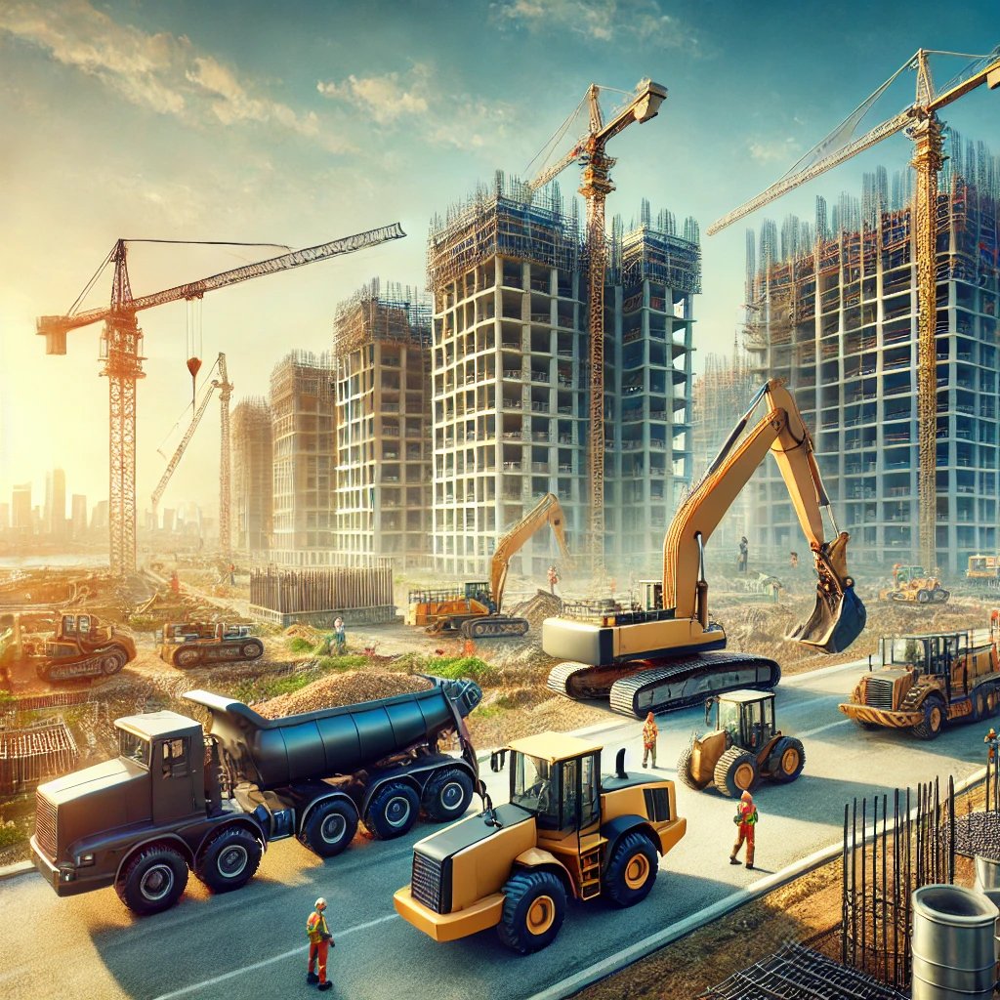
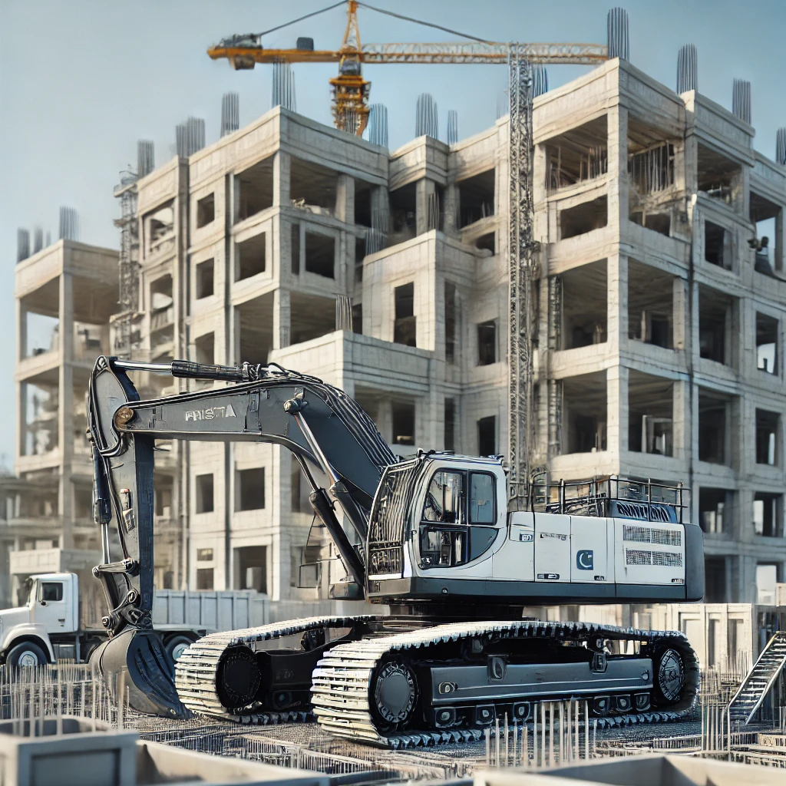

Top-Quality Construction Equipment for Rent and Sale in Pakistan
Welcome to your trusted partner for construction machinery. Whether you're looking to rent or purchase, we offer a comprehensive selection of cutting-edge equipment tailored to meet the demands of the construction industry in Pakistan.
Our company is dedicated to providing reliable, efficient, and cost-effective solutions to contractors, builders, and businesses. From excavators to cranes, we ensure that every piece of machinery is meticulously maintained and ready to deliver superior performance on your site.
Why choose us? With years of experience in the industry, a customer-centric approach, and a commitment to excellence, we stand out as the preferred choice for construction equipment rentals and sales. Our goal is to empower your projects with tools that enhance productivity and reduce downtime.
Explore our extensive inventory, enjoy competitive pricing, and experience unparalleled customer support. Join hundreds of satisfied clients across Pakistan who trust us for their construction machinery needs.
About Us: Your Trusted Partner in Construction Machinery
At Construction Machinery Rental & Sales, we take pride in being a leading provider of high-quality construction equipment across Pakistan. With years of experience, we are committed to delivering reliable and efficient machinery solutions to meet the diverse needs of the construction industry.
Our mission is to empower contractors, builders, and businesses with state-of-the-art equipment that ensures seamless project execution. Whether you need heavy-duty excavators, cranes, loaders, or other machinery, we guarantee exceptional performance and unmatched durability.
We believe in fostering long-term partnerships with our clients by offering top-notch customer support, competitive pricing, and flexible rental and sales options. From small-scale projects to large infrastructure developments, our team is here to help you succeed every step of the way.
Our equipment undergoes rigorous maintenance checks to ensure safety, reliability, and compliance with industry standards. Choose us for your construction machinery needs and experience a seamless blend of quality and affordability.
 Our Premium Services for Construction Projects
We pride ourselves on offering a diverse range of construction services tailored to meet the demands of professionals across Pakistan. Our commitment to quality and reliability ensures your projects are completed with efficiency and precision.
Heavy Machinery Rental
Access a wide array of state-of-the-art construction equipment, including excavators, cranes, bulldozers, and more, available for short or long-term rental at competitive rates.
Sales of New and Used Equipment
Purchase high-quality new and certified used construction machinery, backed by warranty and guaranteed to meet your operational needs.
Maintenance and Repair Services
Keep your machinery in top condition with our expert maintenance and repair services, ensuring minimal downtime and maximum efficiency on-site.
Why Choose Us for Your Construction Needs?
At Construction Machinery Rental & Sales, we are dedicated to delivering unparalleled value to our clients. Our mission is to provide not just equipment, but solutions that empower your projects to succeed. Here's why we are the preferred choice for construction professionals in Pakistan:
High-Quality Equipment
We offer only top-tier construction machinery that meets the highest industry standards. Each piece of equipment is meticulously maintained to ensure safety, efficiency, and reliability on every project.
Competitive Pricing
Our flexible rental and sales plans are designed to suit projects of all sizes. Whether you're working on a small-scale build or a major infrastructure project, you'll find our pricing both transparent and budget-friendly.
Reliable Customer Support
Our expert team is available to assist you at every step, from equipment selection to technical support. We pride ourselves on building long-term partnerships based on trust and exceptional service.
Wide Range of Options
From excavators to cranes, we have a diverse inventory to cater to all your construction needs. Our modern and versatile equipment ensures your project has the right tools for the job.
Contact Us
Address: Malir Model Colony, Karachi, Sindh, Pakistan
Email: constructionpakistan@hotmail.com